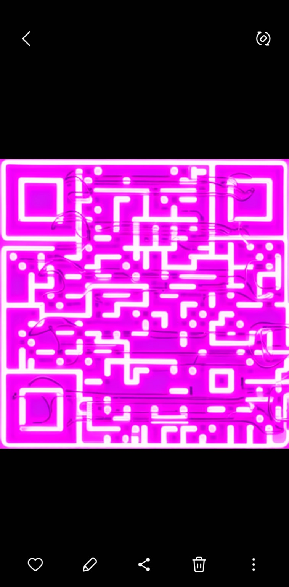

⌁
Análisis inteligente
Una experiencia diseñada para consultar información, organizar datos y mostrar resultados de forma clara.
El comienzo de una nueva asistente inteligente. Conoce la primera versión funcional de LUCY: una muestra de su diseño, concepto y funciones básicas mientras la verdadera versión continúa en desarrollo.
Versión de demostración · La aplicación completa todavía está en desarrollo.
El prototipo permite mostrar la idea central de LUCY y su experiencia inicial. Las capacidades avanzadas que tendrá la versión definitiva todavía están siendo desarrolladas.
Una experiencia diseñada para consultar información, organizar datos y mostrar resultados de forma clara.
Una base preparada para incorporar herramientas, fuentes de información y nuevas funciones.
La primera etapa de una asistente que irá creciendo conforme avance el desarrollo de LUCY.

Estás descargando el prototipo de LUCY. Esta aplicación todavía no representa la versión completa: muestra solamente las funciones básicas y la experiencia inicial que tendrá LUCY.
Estado: prototipo funcional. La versión verdadera de LUCY continúa en desarrollo y podrá incorporar muchas más capacidades.
Nota de seguridad: el APK incluido es el archivo proporcionado para este prototipo. No se realiza aquí una certificación independiente de seguridad. Instálalo únicamente si confías en su origen y revisa los permisos que solicite Android.
Descubre lo básico de lo que será LUCY. Descarga el prototipo y conoce su primera experiencia mientras trabajamos en la versión definitiva.
↓ Descargar LUCY APKArchivo incluido: lucy.apk